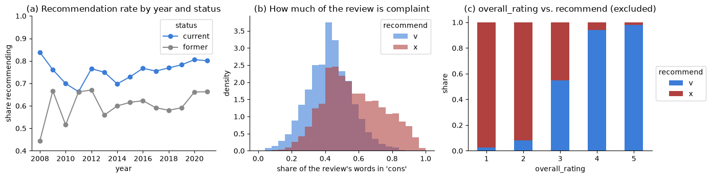
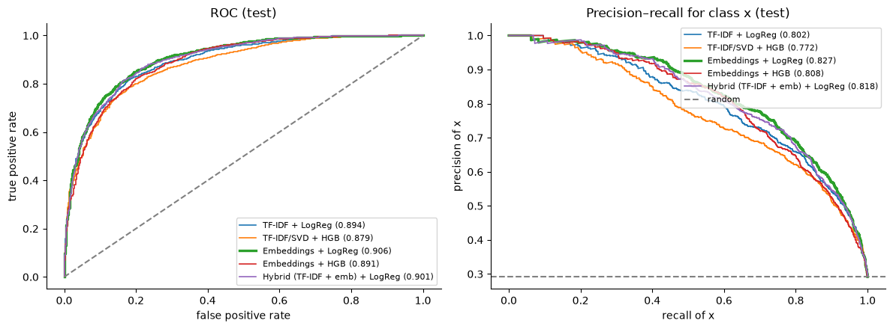
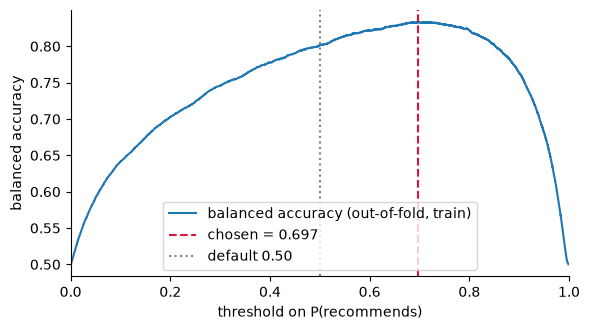
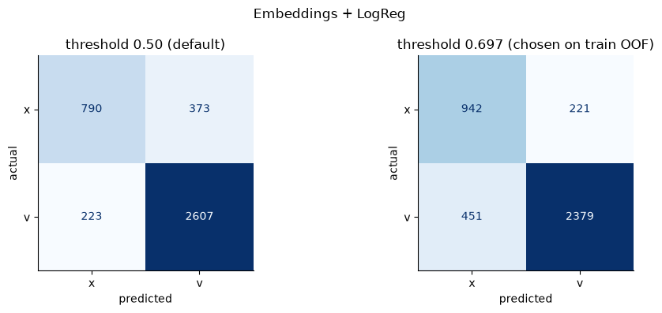
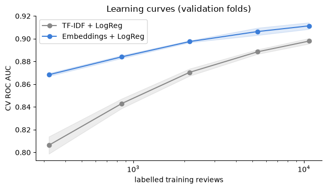

Doporučil by zaměstnanec svého zaměstnavatele?
Krok za krokem, jak vznikl notebook term_project.ipynb: co se v kterém kroku dělá, proč, a co znamenají všechny ty pojmy. Psáno pro někoho, kdo umí programovat, ale data science nedělá.
Podtržené pojmy (třeba ROC AUC) vedou do glosáře na konci. Šedé rámečky Analogie překládají pojem do programátorské řeči, rámečky U nás ukazují skutečná čísla z notebooku. Čísla sekcí notebooku jsou uvedena v závorce, třeba (§ 5.3), abys to v kódu rychle našel.
Projekt za minutu
Vzali jsme 20 000 recenzí zaměstnavatelů z Glassdooru. Každá má nadpis, text pros (co je dobré) a cons (co je špatné) a odpověď na otázku „Doporučil byste firmu kamarádovi?“: v = ano, x = ne. Naučili jsme počítač odhadnout tuhle odpověď jen z textu. Text jsme převedli na čísla dvěma způsoby: klasicky počítáním slov (TF-IDF) a moderně jazykovým modelem (embeddingy, to je naše povinná „AI komponenta“). Pak jsme oba způsoby poctivě porovnali.
Hlavní zjištění: embeddingy jsou o kousek lepší a výrazně lepší, když je málo označených dat. Spojit obě reprezentace nepomohlo a jednoduchý lineární model stačí.
Co vlastně řešíme
Klasifikace je úloha zařadit vstup do jedné z předem daných kategorií. Tady jsou kategorie dvě (doporučuje / nedoporučuje), takže jde o binární klasifikaci.
- Target (cílová proměnná, label) je to, co chceme předpovídat: sloupec
recommend. V kódu je toy, kde 1 = doporučuje a 0 = nedoporučuje. - Featury (příznaky) jsou vstupy, ze kterých předpovídáme: text recenze, jestli je autor současný zaměstnanec, jak dlouho tam pracoval a podobně. V kódu je to
X, tabulka s jedním řádkem na recenzi. - Model je funkce
f(X) → pravděpodobnost, že y = 1. Neprogramujeme ji ručně. Algoritmus si její parametry „najde“ z příkladů, u kterých známe správnou odpověď. Tomu se říká učení s učitelem (supervised learning).
Představ si, že máš psát funkci isRecommending(review): boolean, ale místo pravidel máš 16 000 příkladů vstup → výstup. Machine learning je způsob, jak z příkladů automaticky vyrobit tělo funkce. Testovací data pak hrají roli unit testů, které autor funkce nikdy neviděl.
Mapa postupu
Kurz staví na procesu CRISP-DM: pochopit problém → pochopit data → připravit data → modelovat → vyhodnotit. V našem projektu to vypadá takhle:
Krok 1Přečíst zadání a rozložit ho na checklist
Ze stránky kurzu plyne, co notebook musí obsahovat a za co jsou body (20 bodů celkem):
| Část | Body | Co konkrétně | Kde v notebooku |
|---|---|---|---|
| Data a průzkum | 3 | tvar, typy, chybějící hodnoty, poměr tříd, aspoň 2 smysluplné grafy | § 2–3 |
| Předzpracování | 3 | aspoň 2 z: mazání řádků, odvozené sloupce, groupby, chybějící hodnoty, join; kódování až v pipeline | § 2.1, 4 |
| Modelování a ladění | 4 | testovací sada + stratifikovaná CV, aspoň 2 rodiny algoritmů, GridSearch/RandomizedSearch | § 5, 7 |
| Vyhodnocení a reprodukovatelnost | 4 | accuracy + AUC/AP, confusion matrix se zdůvodněným prahem, ROC křivka, test použit jednou, žádný leakage, běh pod 30 min | § 5, 8 |
| AI komponenta (cesta B) | 6 | embeddingy textu jako vstup modelu, srovnání s TF-IDF, cache výstupů, náklady | § 6, 9 |
Plus technické podmínky: notebook projde „Restart Kernel and Run All“ do 30 minut, jen relativní cesty, API klíč jen v proměnné prostředí a uložené výstupy modelu, aby šel spustit offline.
Krok 2Podívat se na data (EDA)
EDA (exploratory data analysis) je první seznámení s daty, ještě před jakýmkoli modelem. Ptáš se: kolik je řádků a sloupců, jakého jsou typu, co chybí, jak jsou rozložené třídy a co s čím souvisí.
Co v datech je
| Sloupec | Obsah | Použili jsme? |
|---|---|---|
headline, pros, cons | text recenze | ano, hlavní signál |
current | „Current Employee, more than 3 years“ | ano, rozdělené na status + roky |
date_review, job_title, location | datum, pozice, místo | ano, jako odvozené příznaky |
firm | název firmy (428 firem) | ne jako featura, ale pro rozdělení dat (krok 5) |
overall_rating + 6 dílčích hodnocení | hvězdičky 1–5 | ne, únik informací (krok 3) |
ceo_approv, outlook | názor na CEO a výhled firmy | ne, ze stejného důvodu |
recommend | v / x / o | target (o = bez názoru, vyřazeno) |
Poměr tříd a baseline
71 % recenzí doporučuje, 29 % ne. To je nevyvážené třídy (class imbalance), i když jen mírně. Důsledek: „model“, který vždycky řekne „doporučuje“, má 71% úspěšnost a přitom nic neumí. Tomu se říká baseline a každý výsledek s ní musíme srovnávat. Proto se nespoléháme jen na accuracy (podíl správných odpovědí), ale hlavně na metriky z kroku 11.

overall_rating je jen jinak zapsaná odpověď (§ 3.3).Úplně první, co jsem udělal po rozbalení dat: rychlý skript, který spočítal, jak dobře jednotlivé sloupce samy o sobě předpovídají target. overall_rating sám dal AUC 0,93. To je u reálné úlohy podezřele vysoké číslo a skoro vždycky znamená únik informací. Odtud celé rozhodnutí v kroku 3.
Krok 3Únik informací (data leakage)
Tohle je nejdůležitější kapitola. Kurz na ni klade důraz a u obhajoby se na ni skoro jistě zeptají.
Data leakage nastane, když se model při učení nebo vyhodnocení dostane k informaci, kterou by v reálném použití neměl. Výsledek pak vypadá skvěle, ale v praxi model selže.
Unit test, který si očekávanou hodnotu přečte z té samé fixture, kterou testovaná funkce používá ke svému výpočtu. Test je zelený, ale nic neověřuje. Nebo student, který si před písemkou ukradne zadání: známka nic neříká o tom, co umí.
Rozlišujeme několik druhů. U každého je uvedeno, co jsme s ním udělali:
| Druh | Co to je | U nás |
|---|---|---|
| Target leakage | featura, která je důsledkem nebo přepisem odpovědi | Hvězdičky a recommend vyplňuje uživatel na stejném formuláři ve stejnou chvíli. Model by se naučil „5 hvězd → doporučuje“ a v reálném použití (text bez hodnocení) by neměl z čeho. Vyřazeno, ukázka v § 5.3: samotné overall_rating dává AUC 0,93, všechny hvězdičky 0,95. |
| Group / entity leakage | stejná entita v trénovacích i testovacích datech | Recenze stejné firmy si jsou podobné (název firmy, produkty, typické stížnosti). Kdyby byla firma v obou částech, model by mohl poznávat firmu místo nálady. Řešení: každá firma je celá buď v train, nebo v test (krok 5). |
| Duplicity | stejný řádek v obou částech | 24 753 identických recenzí odstraněno před vzorkováním. Kontrola v § 5.1: 0 shodných textů mezi train a test. |
| Preprocessing leakage | úprava dat „naučená“ i z testovacích řádků (průměr pro doplnění, škálování, slovník) | Všechno, co se učí z dat, je uvnitř pipeline a fituje se jen na trénovacích datech (krok 8). |
| Temporal leakage | informace z budoucnosti použitá pro předpověď minulosti | Úloha je klasifikovat napsanou recenzi, ne předpovídat budoucí. Žádná featura nevzniká po odpovědi. Zdůvodněno v § 5.2. |
| Test-set leakage | ladění modelu podle výsledků na testu | Na test sáhneme jen jednou, na konci. Práh i výběr modelu se dělají na trénovacích datech (kroky 10 a 12). |
Krok 4Vzorek a čištění dat
Proč vzorek
Celý dataset má 838 566 řádků. Na embeddingy by to znamenalo zhruba 1,8 hodiny API volání a notebook by se nevešel do 30 minut. Vzali jsme tedy reprodukovatelný vzorek 20 000 recenzí. To je pořád víc, než kurz chce („pár tisíc“).
Postup (§ 2.1)
- Mazání řádků: pryč s
recommend = o(bez názoru), zbude 604 318 řádků. - Chybějící hodnoty v textu: chybějící nadpis (0,3 %) nahradíme prázdným řetězcem.
- Deduplikace: odstraníme 24 753 recenzí s identickým nadpisem + pros + cons.
- Stratifikovaný vzorek: z každé třídy vezmeme stejný podíl, takže vzorek má přesně stejný poměr 70,8 : 29,2 jako celá data.
random_state=42zaručí, že pokaždé vyjde stejný vzorek. To je tzv. seed.
sample = (dedup.groupby("recommend", group_keys=False) # po třídách
.sample(frac=N_SAMPLE / len(dedup), random_state=SEED)) # stejný podíl z každéTabulka firem: groupby + join
Zadání chce aspoň dvě operace předzpracování. Ze všech 838 566 recenzí jsme přes groupby("firm") spočítali pro každou firmu počet recenzí a rok první recenze (zhruba „velikost a viditelnost“ firmy). Tabulka neobsahuje nic z targetu, takže nic neprozrazuje. Pak ji připojíme k recenzím přes merge(..., validate="many_to_one"). Parametr validate nechá pandas zkontrolovat, že každá firma je v tabulce jen jednou, jinak by se řádky tiše zdvojily.
Odvozené sloupce (§ 4)
| Nový sloupec | Z čeho | Proč |
|---|---|---|
is_current | „Current…“ / „Former…“ v current | bývalí zaměstnanci doporučují méně (62 % vs. 76 %) |
tenure_years, tenure_stated | „more than 3 years“ → 3 | délka působení; když chybí, je NaN a příznak 0 |
year | date_review | podíl doporučení se v čase mění |
n_words_* | počet slov v headline / pros / cons | nespokojení víc píšou do cons |
anonymous_title, has_location | prázdná pozice / chybějící místo | chybějící údaj sám může nést informaci |
text | „Headline: …\nPros: …\nCons: …“ | jeden text pro embedding model |
Tyhle úpravy se dívají vždy jen na jeden řádek a nic se „neučí“ z ostatních řádků, proto je smíme udělat před rozdělením dat. Úpravy, které se učí z dat (průměr, škála, slovník), musí být v pipeline (krok 8).
Imputace je doplnění chybějících hodnot. Chybějící tenure_years doplníme mediánem, ale až v pipeline, protože medián je „naučená“ hodnota.
Krok 5Rozdělení dat: train, test a křížová validace
Trénovací a testovací sada
Data rozdělíme na trénovací část (80 %, na ní se model učí a ladí) a testovací část (20 %, ta simuluje budoucí, nikdy neviděná data). Na test se podíváme jen jednou, úplně na konci. Kdybychom podle testu cokoli upravovali, přestane být nezávislý.
Train: 16 007 recenzí z 299 firem, 70,8 % doporučuje. Test: 3 993 recenzí z 95 jiných firem, 70,9 % doporučuje. Firem v obou částech: 0. Shodných textů v obou částech: 0.
Křížová validace (cross-validation)
Když chceme porovnat varianty modelu (různé nastavení, různé algoritmy), potřebujeme je vyhodnotit, ale na test sáhnout nesmíme. Proto trénovací část rozdělíme ještě jednou na k dílů (u nás 3, tzv. foldy). Model se natrénuje na dvou dílech a vyhodnotí na třetím, a to třikrát, pokaždé s jiným vyhodnocovacím dílem. Výsledky zprůměrujeme. Tomu se říká k-fold cross-validation.
- Stratifikovaná CV: v každém foldu je stejný poměr tříd (71 : 29).
- Skupinová (grouped) CV: firma je vždy celá v jednom foldu. Obojí najednou dělá
StratifiedGroupKFold.
outer = StratifiedGroupKFold(n_splits=5, shuffle=True, random_state=SEED)
train_idx, test_idx = next(outer.split(df, df[TARGET], groups=df["firm"])) # 1 z 5 dílů = test (~20 %)
inner = StratifiedGroupKFold(n_splits=3, shuffle=True, random_state=SEED) # CV uvnitř trénovací částiZkusili jsme stejný model s náhodnými foldy (AUC 0,883) a se skupinovými foldy (AUC 0,885). Prakticky žádný rozdíl, takže model z textu firmy moc „nepoznává“. Skupinový split jsme stejně nechali: odpovídá zamýšlenému použití (neznámý zaměstnavatel) a nic nestojí. V notebooku je to napsané otevřeně. Očekávání, které se nepotvrdilo, je taky výsledek.
Krok 6Jak z textu udělat čísla I: TF-IDF (baseline)
Modely umí počítat jen s čísly, takže text musíme převést na vektor (pole čísel). Klasická metoda je bag of words („pytel slov“): pro každé slovo ze slovníku jedno číslo, kolikrát se v textu vyskytuje. Pořadí slov se zahodí.
TF-IDF (term frequency × inverse document frequency) to vylepšuje: slovo dostane vysokou váhu, když je v tomhle textu časté (TF), ale v celém korpusu vzácné (IDF). Slova jako „the“ nebo „company“ jsou všude, takže skoro nic neváží. „Toxic“ nebo „micromanagement“ jsou vzácná a hodně říkají.
| Text cons | pay | toxic | management | the |
|---|---|---|---|---|
| „low pay, toxic management“ | 0.42 | 0.71 | 0.57 | 0 |
| „the pay could be better“ | 0.65 | 0 | 0 | 0.12 |
Ilustrativní hodnoty. Skutečný slovník má desítky tisíc sloupců a většina buněk je 0, takže se ukládá jako řídká matice (sparse matrix).
Nastavení, která jsme použili a ladili:
- Zvlášť TF-IDF pro headline, pros a cons. „Management“ v pros znamená opak než v cons. Jeden společný vektorizér by ten rozdíl smazal. Tohle dělá baseline silnou a srovnání poctivé.
- n-gramy
ngram_range=(1,2): kromě jednotlivých slov i dvojice („not good“, „work life“). min_df: slovo musí být aspoň v n dokumentech, jinak se zahodí (překlepy, šum).sublinear_tf: místo počtu výskytů se použije 1 + log(počet), takže desetkrát opakované slovo nemá desetkrát větší váhu.
Krok 7Jak z textu udělat čísla II: embeddingy (AI komponenta)
Embedding je vektor, který text vyrobí předtrénovaný jazykový model. Model se na obrovském množství textu naučil, že texty s podobným významem mají mít blízké vektory. „Terrible management“ a „leadership is awful“ nemají společné slovo, takže je TF-IDF považuje za nesouvisející, ale embeddingy budou blízko.
- Model:
qwen3-embedding:4bna školním LiteLLM proxy (výchozí model kurzu). LiteLLM je server, který přeposílá požadavky na modely přes OpenAI-kompatibilní API, proto se volá knihovnouopenai. - Vstup: „Headline: …\nPros: …\nCons: …“. Popisky polí řeknou modelu, co je chvála a co kritika.
- Výstup: 2 560 čísel na recenzi. Necháme si prvních 1 024 a znovu je znormalizujeme (délka vektoru = 1). Funguje to, protože model je trénovaný jako Matryoshka: nejdůležitější informace je v prvních dimenzích. Server zkrácení sám neumí, proto to děláme na klientu. Měřením (§ 9.3) jsme ověřili, že 1 024 dimenzí je stejně dobrých jako 2 560 a soubor je 2,5× menší.
- Žádný leakage: modelu posíláme jen text, nikdy odpověď. Embedding je funkce textu, proto ho smíme spočítat pro všechny řádky předem.
Cache a náklady
Volání API je pomalé a zadání chce, aby notebook běžel offline. Embeddingy proto ukládáme do data/embeddings_qwen3-embedding-4b.csv.gz (klíč = review_id). Notebook zavolá API jen pro recenze, které v cache chybí. Při odevzdaném ZIPu to znamená žádné. Vedle leží JSON s metadaty: model, datum, počet requestů, tokenů a čas.
def with_retry(fn, attempts=6, base=1.0, cap=30.0):
for i in range(attempts):
try:
return fn()
except Exception as e:
if not transient(e) or i == attempts - 1: raise
time.sleep(min(cap, base * 2 ** i * (0.5 + random.random()))) # exponenciální backoff + jitterTohle je vzor ze 3. semináře: dočasné chyby (429 Too Many Requests, 5xx) se zopakují s rostoucí pauzou. Jitter je náhodná složka pauzy, aby se klienti nesynchronizovali.
20 000 recenzí = 313 requestů po 64 textech, 1 268 926 tokenů, 3,8 minuty. Školní proxy je zdarma. U komerčních API by to stálo pod 1 USD. Na celý dataset (580 tisíc recenzí) by to bylo zhruba 37 M tokenů a 1,8 hodiny.
Kontrola, že embeddingy dávají smysl (§ 6.3)
Kosinová podobnost dvou vektorů (1 = stejný směr, 0 = nesouvisí) vyšla pro recenze stejné třídy v průměru 0,59, pro různé třídy 0,57. Rozdíl je malý. Embedding totiž víc kóduje téma recenze (plat, vedení, work-life balance) než verdikt. Nejbližší sousedé jedné recenze opravdu mluví o stejném tématu. Verdikt z vektoru musí vytáhnout až klasifikátor.
Krok 8Pipeline: všechno, co se učí, uvnitř
Každý krok předzpracování v scikit-learn má dvě metody:
fit(X): naučí se stav z dat (medián, průměr a rozptyl pro škálování, slovník a IDF váhy pro TF-IDF),transform(X): použije naučený stav na data.
Pipeline řetězí kroky a model do jednoho objektu s fit a predict. ColumnTransformer aplikuje na různé sloupce různé úpravy. Když pak spustíš křížovou validaci, pipeline se v každém foldu znovu nafituje jen na trénovacích řádcích foldu. Tím je preprocessing leakage vyloučený z principu.
Middleware chain nebo kompozice funkcí, kde každý článek má konfigurační fázi (fit) a běhovou fázi (transform). Celý řetěz se nasazuje jako jeden objekt, takže v produkci nemůžeš zapomenout na krok nebo ho omylem nakonfigurovat jinými daty.
META = [("counts", log_scale, COUNT_COLS), # počty slov, velikost firmy: log1p + škálování
("num", impute_scale, NUM_COLS), # roky: doplnit medián + škálování
("bin", "passthrough", BIN_COLS)] # 0/1 příznaky beze změny
prep = ColumnTransformer(
[(f, TfidfVectorizer(...), f) for f in ["headline", "pros", "cons"]] # 3× TF-IDF
+ META)
model = Pipeline([("prep", prep), ("clf", LogisticRegression(max_iter=3000))])- Standardizace (
StandardScaler): odečte průměr a vydělí směrodatnou odchylkou, takže všechny číselné příznaky mají podobný rozsah. Jinak by „rok 2018“ přehlušil „0/1“. log1p= log(1 + x). Počty slov a velikosti firem jsou extrémně nerovnoměrné (firma s 6 recenzemi vedle IBM se 43 748). Logaritmus to stlačí.
Krok 9Modely: dvě rodiny algoritmů
Zadání chce aspoň dvě „rodiny“, tedy principiálně odlišné algoritmy. Každou rodinu jsme zkombinovali s každou reprezentací textu, takže vznikla tabulka 2 × 2 a k ní jeden hybrid.
Logistická regrese (lineární model)
Každý příznak dostane váhu, model spočítá vážený součet z = w₁x₁ + w₂x₂ + … + b a sigmoida 1 / (1 + e^(−z)) ho převede na pravděpodobnost mezi 0 a 1. Učení = najít váhy, které nejlépe sedí na trénovací data. U TF-IDF to je intuitivní: slovo „toxic“ v cons dostane velkou zápornou váhu.
Regularizace a parametr C: model má desítky tisíc vah a snadno by se „naučil zpaměti“ trénovací data (overfitting). Regularizace penalizuje velké váhy. C je inverzní síla penalizace: malé C = silná regularizace = jednodušší model. U embeddingů vyšlo optimální C = 0,0015 (silná regularizace, 1 024 hustých dimenzí), u TF-IDF C = 0,55.
Histogram gradient boosting (stromy)
Rozhodovací strom je série otázek typu if/else („je v cons slovo X?“, „je autor bývalý zaměstnanec?“) zakončená odpovědí. Gradient boosting staví stovky malých stromů za sebou. Každý další opravuje chyby předchozích a výsledek je jejich součet. „Histogram“ znamená, že spojité hodnoty se pro rychlost rozdělí do přihrádek. Early stopping přidávání stromů zastaví, když se výsledek na malé odložené části trénovacích dat přestane zlepšovat.
Stromy si s řídkou maticí desítek tisíc TF-IDF sloupců neporadí dobře. Pro ně proto TF-IDF nejdřív zhustíme přes TruncatedSVD na 200 sloupců.
Na obou reprezentacích vyhrála logistická regrese a byla mnohem rychlejší. Textové příznaky s tisíci rozměry jsou typicky „skoro lineárně oddělitelné“, takže složitější model nepřidá.
Krok 10Ladění hyperparametrů
Parametry si model najde sám při učení (váhy). Hyperparametry nastavujeme my zvenku: C, n-gramy, min_df, rychlost učení stromů, počet listů… Hledáme takové, které dají nejlepší výsledek v křížové validaci.
RandomizedSearchCV vylosuje n kombinací z rozsahů, které zadáme, každou vyhodnotí 3-fold skupinovou CV a nejlepší na konci znovu natrénuje na celé trénovací části (refit=True). GridSearchCV by zkusil všechny kombinace. Náhodné hledání je při stejném rozpočtu obvykle efektivnější.
s = RandomizedSearchCV(make_pipe("emb", "logreg"),
{"clf__C": loguniform(1e-3, 1)}, # C log-rovnoměrně mezi 0,001 a 1
n_iter=10, scoring="roc_auc", cv=inner, refit=True)
s.fit(train, y_train, groups=g_train) # groups = firmyclf__C je adresa parametru uvnitř pipeline: krok clf, parametr C. loguniform losuje rovnoměrně na logaritmické škále, protože u C nás zajímá řád (0,001 vs. 0,1), ne přesná hodnota.
best_score_ je skóre vítěze soutěže a vítěz vypadá vždycky o kousek lépe, než doopravdy je (vybrali jsme ho právě proto, že na těchhle foldech vyšel nejlíp). Je to jako vybrat nejlepší z deseti benchmarkových běhů a tvrdit, že je to průměrný výkon. Proto se jako výsledek uvádí skóre na testu. U nás CV 0,911 → test 0,906, tedy optimismus jen pět tisícin.
Model jsme vybrali podle CV skóre na trénovacích datech, tedy dřív, než jsme viděli test. Vyhrály Embeddingy + LogReg.
Krok 11Metriky: jak poznat, že je model dobrý
Matice záměn (confusion matrix)
Všechny metriky vycházejí z jedné tabulky: kolikrát model řekl co a jaká byla pravda. Tady je pro náš finální model na testu (3 993 recenzí):
(1 163)
(2 830)
Z toho:
- Accuracy = (942 + 2 379) / 3 993 = 0,832. Podíl správných odpovědí. Pozor, baseline „vždy v“ má 0,709.
- Recall (citlivost) třídy x = 942 / 1 163 = 0,81. Kolik ze skutečně nespokojených jsme našli.
- Precision (přesnost) třídy x = 942 / (942 + 451) = 0,68. Když model řekne „nespokojený“, jak často má pravdu.
- Balanced accuracy = průměr recallů obou tříd = (0,81 + 0,84) / 2 = 0,825. Necitlivá na nevyváženost, baseline má 0,5.
- F1 = harmonický průměr precision a recall (0,74 pro třídu x).
ROC křivka a AUC
Model ve skutečnosti nevrací ano/ne, ale pravděpodobnost. Ano/ne vznikne až porovnáním s prahem (krok 12). ROC křivka ukazuje všechny prahy najednou: pro každý práh vynese, kolik pozitivních model chytí (true positive rate) proti tomu, kolik negativních omylem označí (false positive rate).
ROC AUC je plocha pod křivkou. Má hezký význam: je to pravděpodobnost, že náhodně vybraná doporučující recenze dostane od modelu vyšší skóre než náhodně vybraná nedoporučující. 0,5 je náhoda, 1,0 je dokonalé seřazení. Nezávisí na prahu ani na poměru tříd, proto je to hlavní srovnávací metrika.
Precision–recall křivka a AP
Stejný princip, ale osy jsou precision a recall pro třídu x (nespokojení), tedy pro tu menšinovou, „akční“ třídu, kterou by HR chtělo najít. Average precision (AP) je plocha pod touto křivkou. Náhodný model má AP = podíl třídy x = 0,29. Náš má 0,827.

Krok 12Volba prahu
predict() standardně říká „v“, když pravděpodobnost ≥ 0,5. To ale není rozhodnutí, jen výchozí hodnota. Volba prahu je obchodní otázka: která chyba je dražší?
- False positive (model: v, pravda: x): přehlédneme nespokojeného zaměstnance.
- False negative (model: x, pravda: v): falešný poplach.
Pro HR je dražší přehlédnout nespokojeného a navíc je těch nespokojených méně. Chyby jsme tedy zvážili převrácenou četností tříd: přehlédnutý x stojí 0,71 / 0,29 ≈ 2,4× víc než falešný poplach. Minimalizovat takovou cenu je matematicky totéž jako maximalizovat balanced accuracy.
Kde práh hledat: rozhodně ne na testu, to by byl leakage. Použijeme out-of-fold predikce: v křížové validaci dostane každý trénovací řádek předpověď od modelu, který ho při učení neviděl. Na těchto „poctivých“ predikcích zkusíme všechny prahy a vybereme ten s nejvyšší balanced accuracy. Ten pak beze změny použijeme na test.
oof = cross_val_predict(final_model, train, y_train, groups=g_train, cv=inner, method="predict_proba")[:, 1]
fpr, tpr, thr = roc_curve(y_train, oof)
t_star = thr[np.argmax((tpr + 1 - fpr) / 2)] # balanced accuracy pro každý práh → 0,697

Krok 13Vyhodnocení AI komponenty: TF-IDF vs. embeddingy
Výsledky na testu (§ 8.2)
| Model | CV AUC | Test AUC | AP (x) |
|---|---|---|---|
| Embeddingy + LogReg | 0.911 | 0.906 | 0.827 |
| Hybrid (TF-IDF + embeddingy) + LogReg | 0.907 | 0.901 | 0.819 |
| TF-IDF + LogReg (baseline) | 0.898 | 0.894 | 0.802 |
| Embeddingy + HGB | 0.897 | 0.891 | 0.808 |
| TF-IDF/SVD + HGB | 0.880 | 0.879 | 0.773 |
| Vždy „doporučuje“ | – | 0.500 | 0.291 |
Je ten rozdíl skutečný? Bootstrap (§ 9.1)
Rozdíl AUC 0,011 může být náhoda konkrétní testovací sady. Bootstrap: 500krát náhodně vylosujeme (s opakováním) 3 993 recenzí z testu, na každém vylosování spočítáme rozdíl a podíváme se na rozsah prostředních 95 % výsledků. Vyšlo [+0,004; +0,019]. Interval nezahrnuje nulu, takže embeddingy jsou opravdu lepší. Poctivá poznámka v notebooku: losujeme recenze, ne firmy, takže interval je o něco užší, než by měl být.
Learning curve: kolik dat je potřeba (§ 9.2)

Learning curve ukazuje výkon v závislosti na množství trénovacích dat. Tohle je nejsilnější argument pro embeddingy: když je označených dat málo (což je v praxi běžné), pomůžou nejvíc.
Další zjištění
- Počet dimenzí (§ 9.3): 32 → 0,80, 128 → 0,88, 512 → 0,907, 1 024 → 0,911. Plných 2 560 (měřeno při vývoji) → 0,904, tedy nic navíc.
- Hybrid nepomohl: jedno C musí regularizovat desítky tisíc řídkých a 1 024 hustých sloupců naráz a embeddingy už většinu informace ze slov obsahují.
- Analýza chyb (§ 9.4): TF-IDF se plete, když někdo píše stížnosti do pole pros (každé slovo tam posouvá skóre nahoru) nebo když je pozitivní slovo negované („Don't Recommend“). Embeddingy se pletou u krátkých recenzí s ostrými cons, jejichž autor přesto doporučuje („Great people … Careers dont exist“). To jsou upřímně nejednoznačné případy.
Jak jsem to dělal já, a jak bys to dělal ručně
Ručně bys to dělal v Jupyteru buňku po buňce, v pořadí kroků výše. Já jsem pořadí dodržel, jen jsem část práce dělal skripty mimo notebook a notebook nakonec vygeneroval. Skutečný sled kroků:
- Zadání: stáhl jsem stránky kurzu a vypsal si požadavky (krok 1).
- Materiály: přečetl jsem notebooky ze seminářů 1–4 a převzal z nich knihovny a styl. Seminář 2:
Pipeline,ColumnTransformer,StratifiedKFold,RandomizedSearchCV, volba prahu na OOF. Seminář 3:with_retry, cache,l2_normalise, embeddingy jako featury proti TF-IDF. - Prostředí:
.venvs Pythonem 3.14 a balíky kurzu (requirements.txt). - Průzkum dat skriptem: tvar, chybějící hodnoty, poměr tříd, AUC jednotlivých hodnocení. Tady vyskočil leakage s hodnoceními.
- Sonda do API: jaké modely jsou k dispozici, kolik dimenzí vrací embedding (2 560), jak je to rychlé (~110 textů/s) a jestli jde zkrátit dimenze na serveru (nejde).
- Vzorek + embeddingy:
dev/build_sample_and_embed.pypostavil vzorek stejným kódem jako notebook a stáhl embeddingy (3,8 min). - Rychlý experiment:
dev/quick_exp.pyověřil, kolik dimenzí stačí a jak dlouho trvá gradient boosting. Podle toho jsem nastavil rozpočty ladění, aby notebook běžel pod 30 minut. - Notebook:
dev/make_notebook.pyobsahuje všechny buňky a vygenerujeterm_project.ipynb. Pakjupyter nbconvert --executespustí notebook celý od začátku, stejně jako „Restart & Run All“. - Čtení výsledků a oprava textu: část komentářů jsem napsal předem podle očekávání a dvě se nepotvrdila (skupinový split neměl efekt, hybrid nepomohl). Text jsem přepsal podle skutečných čísel.
- Export a kontrola: HTML export, ZIP a nakonec spuštění z rozbaleného ZIPu bez surových dat a bez klíče, abych ověřil, že opravdu běží offline.
Uprav buňku v dev/make_notebook.py, pak:
.venv/bin/python dev/make_notebook.py
.venv/bin/jupyter nbconvert --to notebook --execute --inplace term_project.ipynb
.venv/bin/jupyter nbconvert --to html term_project.ipynbNebo uprav přímo notebook v JupyterLabu (.venv/bin/jupyter lab). Pak ale generátor přestane odpovídat, tak si vyber jedno.
Soubory projektu
| Soubor | Co to je | Do ZIPu? |
|---|---|---|
term_project.ipynb / .html | notebook a jeho HTML export | ano |
data/glassdoor_sample.csv | vzorek 20 000 recenzí | ano |
data/firms.csv | tabulka firem (groupby z celých dat) | ano |
data/embeddings_…csv.gz + .meta.json | cache embeddingů a jejich náklady | ano |
data/raw/ | původní data z Kaggle (293 MB) | ne, odkaz v notebooku |
.env | API klíč | nikdy |
dev/ | pomocné skripty a generátor | ne |
Otázky na obhajobu
Ověřovací otázka cílí na kód, data nebo rozhodnutí v notebooku a odpovídá se bez spoluhráče. Tohle jsou pravděpodobné otázky s krátkou odpovědí, kterou bys měl umět říct vlastními slovy.
Proč jste vyřadili overall_rating, když tak dobře předpovídá?
Protože to není předpověď, ale přepis odpovědi: uživatel ho vyplňuje na stejném formuláři ve stejnou chvíli jako recommend. Je to target leakage. Model by se naučil „5 hvězd = doporučuje“ a v zamýšleném použití (text bez hodnocení) by byl k ničemu. Ukázali jsme to v § 5.3: samotné overall_rating má AUC 0,93.
Notebook § 1.2, § 5.3
Co je StratifiedGroupKFold a proč ho používáte?
Rozdělení dat na foldy, které zároveň drží poměr tříd v každém foldu (stratified) a dává všechny řádky jedné skupiny do stejného foldu (group). Skupinou je u nás firma, takže model testujeme na firmách, které neviděl. Zabraňuje to group leakage. Empiricky se ukázalo, že rozdíl proti náhodnému splitu je zanedbatelný (0,883 vs. 0,885).
§ 5.1, § 5.4
Proč nestačí accuracy?
Kvůli nevyváženým třídám: 71 % recenzí doporučuje, takže model „vždy ano“ má accuracy 0,71 a nic neumí. ROC AUC nezávisí na prahu ani na poměru tříd. AP třídy x měří, jak dobře najdeme menšinovou třídu, a její náhodná úroveň je 0,29.
§ 1.3, § 3.2
Co znamená AUC 0,906?
S pravděpodobností 90,6 % dá model náhodně vybrané doporučující recenzi vyšší skóre než náhodně vybrané nedoporučující. 0,5 = náhoda, 1 = dokonalé seřazení.
Jak jste zvolili práh a proč ne na testu?
Na out-of-fold predikcích trénovací sady jsme vybrali práh s nejvyšší balanced accuracy, což odpovídá ceně chyb vážené převrácenou četností tříd (přehlédnutý nespokojený stojí 2,4× víc). Vyšlo 0,697. Na testu ne, protože práh je naučená část modelu. Volba podle testu by byla test-set leakage a výsledek by byl optimistický.
§ 8.1
Co je TF-IDF a proč tři vektorizéry?
Váha slova = jak časté je v tomto textu × jak vzácné je v korpusu. Tři zvlášť (headline, pros, cons), protože stejné slovo znamená v pros něco jiného než v cons. Jeden vektorizér na spojeném textu by ten rozdíl smazal.
§ 7.1
Co je embedding a proč z něj není leakage?
Vektor, který jazykový model vyrobí z textu tak, aby texty s podobným významem byly blízko. Modelu posíláme jen text, nikdy label, takže embedding je funkce textu. Proto ho smíme spočítat pro všechna data předem, stejně jako počet slov.
§ 6.1
Proč jen 1 024 dimenzí z 2 560?
Model je trénovaný jako Matryoshka (nejdůležitější informace v prvních dimenzích), takže zkrácení a znovunormalizace dávají platný kratší embedding. Změřili jsme, že 1 024 dimenzí dává AUC 0,911 a plných 2 560 dává 0,904. Cache je díky tomu 48 MB místo ~120 MB. Server zkrácení nepodporuje, proto ho děláme na klientu.
§ 6.1, § 9.3
Proč je best_score_ optimistické a co reportujete?
best_score_ je skóre vítěze mezi všemi zkoušenými konfiguracemi na stejných foldech, takže vítěz je z principu nadhodnocený (selection optimism). Reportujeme skóre na testovací sadě, použité jednou: 0,906 proti CV 0,911.
§ 7.2, § 8.2
Co dělá parametr C v logistické regresi?
Inverzní síla regularizace. Malé C = velká penalizace vah = jednodušší model, menší riziko overfittingu. Embeddingy vyšly s C = 0,0015, TF-IDF s C = 0,55. Ladili jsme ho přes RandomizedSearchCV s log-rovnoměrným rozdělením.
Proč je preprocessing uvnitř Pipeline?
Aby se všechno, co se učí z dat (medián pro doplnění, průměr a rozptyl pro škálování, slovník TF-IDF), naučilo jen na trénovacích řádcích, a v CV znovu v každém foldu. Kdyby se to fitovalo na všech datech předem, testovací řádky by ovlivnily trénink (preprocessing leakage).
§ 4, § 7.1
Jak víte, že embeddingy jsou opravdu lepší, a ne náhodou?
Tři důkazy: lepší jsou v CV i na testu, u obou rodin algoritmů. Bootstrap interval rozdílu AUC [+0,004; +0,019] nezahrnuje nulu. Learning curve ukazuje konzistentní náskok, největší při málo datech. Omezení: bootstrap losuje recenze, ne firmy, takže interval je spíš užší.
§ 9.1, § 9.2
Kolik stála AI komponenta?
313 requestů, 1,27 M tokenů, 3,8 minuty na školním proxy (cena 0). Komerčně pod 1 USD. Výsledky jsou v cache, takže notebook běží offline a API nevolá.
§ 9.5
Jak jste vytvořili vzorek a proč je reprodukovatelný?
Vyřadili jsme o, doplnili prázdné texty a odstranili duplicity. Pak stratifikovaný vzorek: z každé třídy stejný podíl přes groupby(...).sample(frac=..., random_state=42). Pevný seed znamená, že vzorek je pokaždé stejný, a poměr tříd sedí s celými daty na 4 desetinná místa.
§ 2.1
Glosář
Abecedně, s anglickým termínem, protože ten najdeš v kódu i v dokumentaci.
- Accuracy (přesnost klasifikace)
- Podíl správných odpovědí. Při nevyvážených třídách zavádějící: musí se srovnat s baseline.
- AP — average precision
- Plocha pod precision–recall křivkou. Shrnuje, jak dobře model řadí danou třídu nahoru. Náhodná úroveň = podíl té třídy.
- AUC — ROC AUC
- Plocha pod ROC křivkou. Pravděpodobnost, že náhodný pozitivní příklad dostane vyšší skóre než náhodný negativní. 0,5 náhoda, 1 dokonalé.
- Balanced accuracy
- Průměr recallů všech tříd. Necitlivá na nevyváženost, náhoda = 0,5.
- Baseline
- Nejjednodušší možné řešení, se kterým se všechno srovnává. U nás „vždy doporučuje“ (DummyClassifier). Pro AI komponentu je baseline TF-IDF.
- Bootstrap
- Odhad nejistoty výsledku: opakovaně losujeme vzorek s opakováním ze stejných dat a sledujeme, jak moc se metrika mění.
- Cosine similarity (kosinová podobnost)
- Kosinus úhlu mezi dvěma vektory. 1 = stejný směr (podobný význam), 0 = nesouvisí. Pro vektory délky 1 je to prostý skalární součin.
- CRISP-DM
- Standardní postup data-science projektu: business understanding → data understanding → data preparation → modelling → evaluation → deployment.
- Cross-validation (křížová validace)
- Data se rozdělí na k dílů, model se k-krát trénuje na k−1 dílech a hodnotí na zbylém. Průměr je odhad výkonu bez sahání na test.
- EDA — exploratory data analysis
- Úvodní průzkum dat: struktura, chybějící hodnoty, rozdělení, vztahy, grafy.
- Early stopping
- Zastavení učení, když se výsledek na odložené validační části přestane zlepšovat. Chrání před overfittingem.
- Embedding
- Vektor čísel, kterým jazykový model reprezentuje význam textu. Podobné texty mají blízké vektory.
- F1
- Harmonický průměr precision a recall. Vysoký jen tehdy, když jsou vysoké obě.
- Feature (příznak)
- Jeden vstupní údaj modelu (sloupec X).
- Gradient boosting
- Model z mnoha malých rozhodovacích stromů, kde každý další opravuje chyby součtu předchozích. V kódu
HistGradientBoostingClassifier. - Group split (skupinové rozdělení)
- Rozdělení dat, při kterém jsou všechny řádky jedné skupiny (u nás firmy) na stejné straně.
- Hyperparameter
- Nastavení modelu, které se neučí z dat, ale volíme ho zvenku (C, n-gramy, rychlost učení). Ladí se přes CV.
- Imputation (imputace)
- Doplnění chybějících hodnot, např. mediánem. Medián je naučená hodnota, proto patří do pipeline.
- Class imbalance (nevyvážené třídy)
- Jedna třída je výrazně častější (u nás 71 : 29). Ovlivňuje volbu metrik a prahu.
- L2 normalizace
- Vydělení vektoru jeho délkou, takže má délku 1. Pak se dají vektory porovnávat jen podle směru.
- Data leakage (únik informací)
- Model se při učení nebo hodnocení dostane k informaci, kterou by v reálném použití neměl. Výsledek je pak nadhodnocený.
- Learning curve
- Graf výkonu modelu v závislosti na množství trénovacích dat.
- Model
- Funkce ze vstupů na předpověď, jejíž parametry se našly učením z dat.
- Matryoshka representation learning
- Způsob tréninku embeddingů, při kterém i prvních k dimenzí tvoří použitelný kratší embedding (jako matrjoška v matrjošce).
- Medián
- Prostřední hodnota seřazených dat. Na rozdíl od průměru ho neovlivní extrémy.
- n-gram
- Posloupnost n slov za sebou. Unigram „good“, bigram „not good“.
- Out-of-fold (OOF) predikce
- Předpovědi pro trénovací řádky, kde každý řádek předpovídá model z CV, který ho při učení neviděl. Poctivý podklad pro volbu prahu.
- Overfitting (přeučení)
- Model se naučí trénovací data zpaměti včetně šumu a na nových datech funguje hůř.
- Pipeline
- Řetěz kroků předzpracování a modelu v jednom objektu.
fitučí všechny kroky jen na předaných datech,predictje aplikuje. - Precision
- Z případů, které model označil jako třídu X, kolik jich opravdu je X.
- Recall (citlivost)
- Ze všech skutečných případů třídy X, kolik jich model našel.
- Regularization (regularizace)
- Penalizace složitosti modelu (velkých vah), která brání overfittingu. V LogisticRegression ji řídí
C: menší = silnější. - ROC křivka
- Graf true positive rate proti false positive rate pro všechny možné prahy.
- Standardization (standardizace)
- Převod na průměr 0 a směrodatnou odchylku 1, aby měly příznaky srovnatelný rozsah.
- Seed / random_state
- Počáteční hodnota generátoru náhodných čísel. Stejný seed = stejné „náhodné“ výsledky, tedy reprodukovatelnost.
- Sigmoid (sigmoida)
- Funkce 1 / (1 + e−z), která převede libovolné číslo na hodnotu mezi 0 a 1.
- Sparse matrix (řídká matice)
- Matice, kde je většina hodnot nulová. Ukládá se jen nenulové, což šetří paměť.
- Stratifikace
- Rozdělení nebo vzorkování, které zachová poměr tříd.
- TruncatedSVD
- Matematická komprese matice na menší počet sloupců, které zachytí co nejvíc informace. U nás 200 sloupců z TF-IDF pro stromové modely.
- Target (cílová proměnná, label)
- To, co předpovídáme. U nás
recommend→y. - Test set
- Data odložená stranou až do konce. Simulují budoucí data, použijí se jednou.
- TF-IDF
- Reprezentace textu, kde má každé slovo váhu podle četnosti v textu a vzácnosti v celém korpusu.
- Threshold (práh)
- Hranice, nad kterou se pravděpodobnost převede na rozhodnutí „ano“. Výchozí je 0,5, my máme 0,697.
- Token
- Kousek textu, se kterým pracuje jazykový model (zhruba slovo nebo jeho část). Podle tokenů se počítá cena a zátěž.
- Training set
- Data, na kterých se model učí a ladí.
- Decision tree (rozhodovací strom)
- Model ze stromu otázek if/else nad příznaky, zakončený odpovědí v listech.
Vytvořeno z notebooku term_project.ipynb (běh 8. 11. 2026). Všechna čísla jsou z jeho výstupů. Když notebook změníte a znovu spustíte, čísla se můžou mírně posunout.